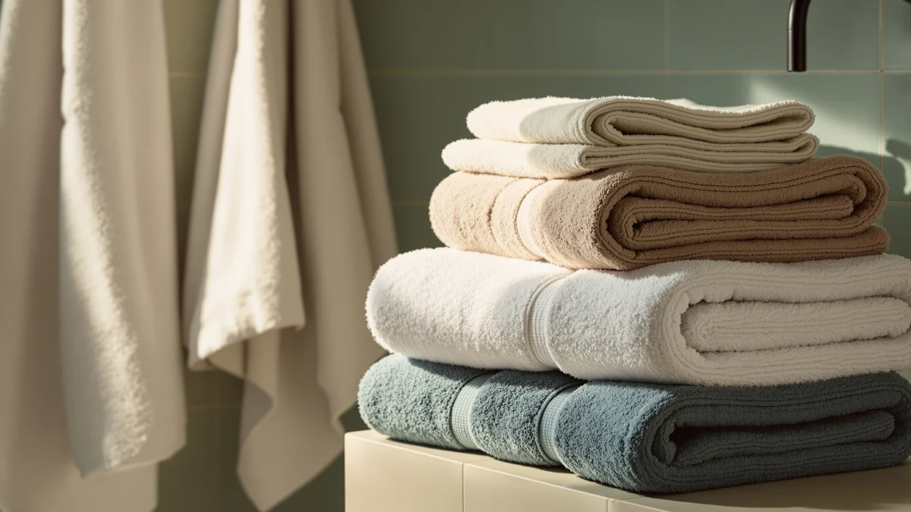

Best How to Clean Bath Towels (2026) | Best Bath Towels
Prices and picks verified as of August 2026. Independent, reader-supported reviews.


Things to Know Before You Buy
- Wash bath towels every three to four uses, not after every shower, to balance hygiene against wear.
- Skip fabric softener. It coats cotton fibers with a waxy film that cuts absorbency over time.
- Warm water around 104F cleans most towels; save hot water for gym-sweaty or sick-day towels.
- A cup of white vinegar strips detergent buildup and clears the musty smell without harming fibers.
- Dry towels fully on medium heat. Damp towels left in a pile grow mildew within hours.
Learning how to clean bath towels sounds obvious until your favorite set starts smelling sour a few hours after it dries. You probably toss towels in with the rest of your laundry, add a capful of softener, and call it done. That routine traps detergent deep in the pile, coats the cotton with a waxy film, and turns a plush towel into a stiff, half-absorbent rag over a few months.
The fix takes five steps and about thirty minutes of hands-on work spread across a wash and dry cycle. You sort the load, cut back the detergent, wash warm, run a vinegar refresh when towels turn musty, and dry them all the way through. Follow it and a $30 set of towels will feel new for years instead of months.
What You'll Need
- Supplies: Laundry detergent, white distilled vinegar, baking soda
- Tools: A washing machine and a dryer or clothesline
Step 1: Sort your towels and shake them out
Cleaning bath towels well starts before the machine turns on. Pull your towels off the rack and give each one a firm shake outside or over the tub. This knocks loose the hair, skin flakes, and lint that otherwise clump in the wash and cling right back onto the fabric.
Sort by color the way you would any laundry, keeping white and light towels apart from dark reds and navies that bleed. Group by weight too. A dense bath sheet holds far more water than a hand towel, so mixing the two means the light pieces finish spinning while the heavy ones stay soaked.
Load the drum loosely. Towels need room to tumble and unfold so water and detergent reach the inner loops. Pack the machine to the top and you get patchy cleaning, trapped suds, and the damp smell that survives the whole cycle.
Step 2: Measure your detergent and skip the softener
The biggest mistake you can make when you wash bath towels is using too much detergent. More soap does not mean cleaner towels. Excess detergent cannot fully rinse out of thick cotton loops, so it dries into a crusty residue that stiffens the pile and traps odor. Use about half the dose marked on the cap, or one tablespoon of concentrated liquid for a normal load.
Leave the fabric softener out. Softener works by coating fibers in a thin waxy layer, and that layer is the enemy of an absorbent towel. After a few washes with softener, your towels feel plush for a moment but push water around instead of soaking it up. If you want softness, the vinegar in Step 4 does the job without the coating.
Pick a detergent without heavy dyes or perfumes if your skin reacts to residue. A basic unscented formula rinses cleaner and lets the vinegar refresh handle any lingering smell.
Step 3: Wash on warm water with an extra rinse
Water temperature decides how well you clean bath towels, and warm is the sweet spot for most loads. Set the machine to about 104F, warm to the touch but not steaming. Warm water dissolves body oils and detergent better than cold, without the fading and shrinkage that hot water causes to dyed cotton over time.
Reserve hot water, 130F or higher, for towels that need sanitizing: gym towels soaked in sweat, or anything used during an illness. Hot water kills more bacteria but wears the fibers faster, so treat it as the exception rather than the default.
Turn on the extra rinse setting if your machine has one. That second rinse flushes out the last of the detergent and oils a single rinse leaves behind, and it is the difference between a towel that smells fresh and one that turns sour by evening.
Step 4: Refresh musty towels with vinegar and baking soda
Once or twice a month, or any time your towels feel stiff and smell musty, give them a deeper clean with two pantry staples. Run the first wash with one cup of white distilled vinegar poured into the detergent tray and no detergent at all. The vinegar dissolves the mineral and detergent buildup that regular washing leaves behind on bath towels.
Follow with a second short wash using a half cup of baking soda. Baking soda neutralizes the acids from body oils and lifts odor out of the fibers rather than masking it. Running the two separately matters, because vinegar and baking soda cancel each other out if you dump them in together.
This vinegar and baking soda reset is the fastest way to rescue towels you were about to throw out. Stiff, smelly towels usually are not worn out. They are clogged, and stripping that buildup brings back the softness and absorbency you thought was gone for good.
Step 5: Dry your towels completely on medium heat
Drying is where you either finish the job or undo it, so dry your clean bath towels fully and promptly. Move them from the washer to the dryer the moment the cycle ends. Wet towels left balled up in the drum grow mildew within a few hours, and that sour smell soaks back into fibers you just cleaned.
Set the dryer to medium heat, not high. High heat scorches cotton over time, weakens the loops, and creates static that makes towels feel rough. Medium heat dries them thoroughly with less wear, and tossing in a couple of wool dryer balls speeds airflow and fluffs the pile without any softener.
Confirm the towels are bone dry before you fold them. A towel that feels almost dry still holds enough moisture to breed mildew in a closed linen closet. If you line dry instead, hang towels in direct sun and give them a shake once dry to loosen the stiffness air drying can leave.
Common Mistakes to Avoid
The habits that ruin towels are easy to fix once you spot them. The most common one is washing bath towels with fabric softener every single load. That waxy coating builds up fast, and within a month your towels repel water instead of drinking it in. Cut the softener and reach for vinegar when you want softness back.
Overloading the machine ranks a close second. A stuffed drum cannot move towels through the water, so detergent settles in patches and never fully rinses. Wash fewer towels per load and give them room to tumble.
Leaving damp towels in the washer is the fastest route to that mildew smell. Even an hour in a warm drum starts the growth, so set a timer and move them to the dryer right away. Using too much detergent backfires the same way softener does, leaving residue that stiffens the pile, so measure to half the cap line.
Drying on high heat feels efficient, but it shortens a towel's life by breaking down cotton fibers and baking in static. Medium heat protects the pile. Fix these five habits and your towels stay soft, fresh, and absorbent far longer.
Our Top Picks
Clean towels last longer, but even the best washing routine cannot save a worn-out set. When it is time to replace them, these three are the ones we would buy. Each holds up to frequent washing without going stiff or thin.

Editor's Pick
Cleanbear Bath Towels Soft Shower
The Cleanbear set balances a soft, dense pile with quick drying, and it survives repeated hot washes without fraying at the hems. For most bathrooms, it is the towel that stays plush the longest.
$29.99
Check Price on Amazon
Best Value
Jacquotha Waffle Bath Towels 2-Piece
The waffle weave dries faster than a plush terry towel and resists that musty smell because air moves through it. If you live somewhere humid, this texture stays fresh between washes.
$36.95
Check Price on Amazon
Premium Choice
KAHAF Collection 6-Pack Bath Towels
Six matching towels at this price make it easy to keep a clean set in rotation while others are in the wash. The cotton is thick enough to feel plush yet thin enough to dry overnight.
$28.99
Check Price on AmazonHow often should you clean bath towels?
Wash bath towels every three to four uses, or about once a week for a towel one person uses daily.
Can you clean bath towels with vinegar without damaging them?
Yes.
Frequently Asked Questions
How often should you clean bath towels?
Wash bath towels every three to four uses, or about once a week for a towel one person uses daily. Hang them spread out to dry fully between uses, since a towel that never dries needs washing sooner. Gym and face towels need washing after every use because they hold more sweat and bacteria.
Can you clean bath towels with vinegar without damaging them?
Yes. One cup of white distilled vinegar per load is gentle on cotton and safe for most towels. Vinegar strips detergent and mineral buildup rather than attacking the fibers. Skip it only on towels with special anti-microbial coatings, where the manufacturer advises against acids.
What temperature should you wash bath towels at?
Warm water around 104F cleans most bath towels well while protecting the color and fibers. Use hot water above 130F only for towels that need sanitizing, such as gym towels or towels used during an illness. Cold water saves energy but struggles to remove body oils.
Why do my towels smell even after washing?
A sour smell after washing usually means detergent buildup or mildew, not dirty towels. Too much detergent leaves residue that traps odor, and towels left damp in the machine grow mildew within hours. Run a vinegar wash to strip the buildup, then dry the towels promptly on medium heat.
Should you use fabric softener on bath towels?
No. Fabric softener coats cotton in a waxy film that reduces how much water a towel can absorb. Towels feel soft at first but turn water-resistant over a few washes. For lasting softness, use white vinegar in the rinse instead, which leaves no coating.
Verdict
Knowing how to clean bath towels comes down to five habits: shake and sort before washing, measure detergent to half the cap, wash on warm with an extra rinse, run a vinegar and baking soda refresh when towels turn musty, and dry them fully on medium heat. None of it takes special products or extra time, yet it decides whether a towel stays plush for years or goes stiff and sour in a season. Skip the fabric softener, do not overload the drum, and never leave wet towels sitting in the machine. When your current set finally wears thin despite good care, the Cleanbear Bath Towels are the ones we would buy first, because the dense pile holds up to frequent washing without going flat. Treat your towels the way this guide lays out, and even an affordable set will feel fresh off the shelf for months longer than you expect.